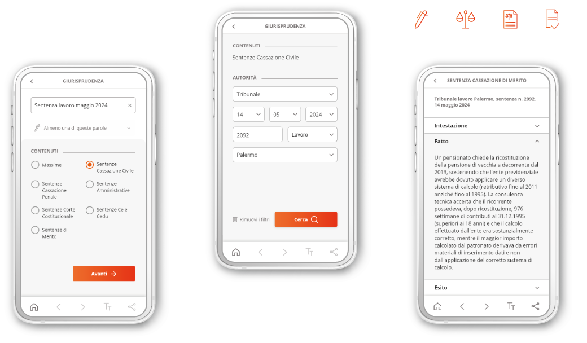
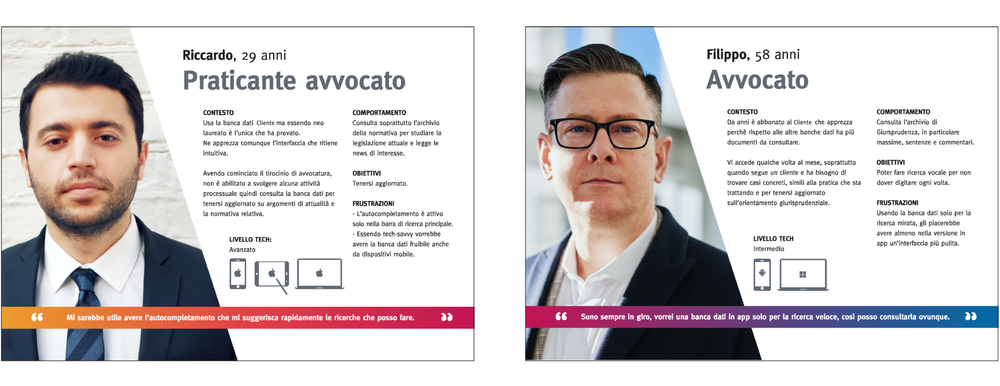
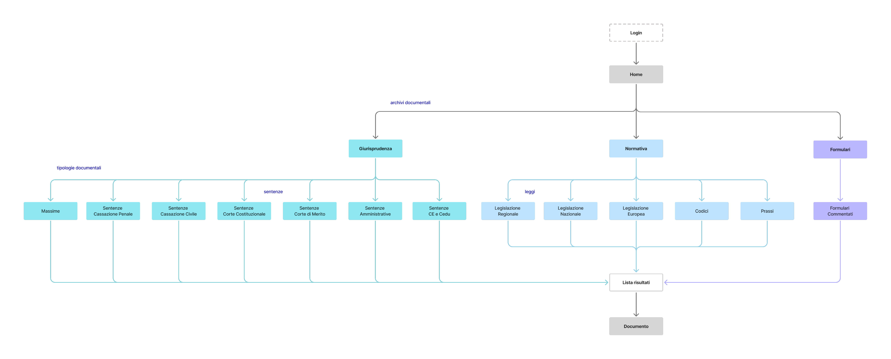
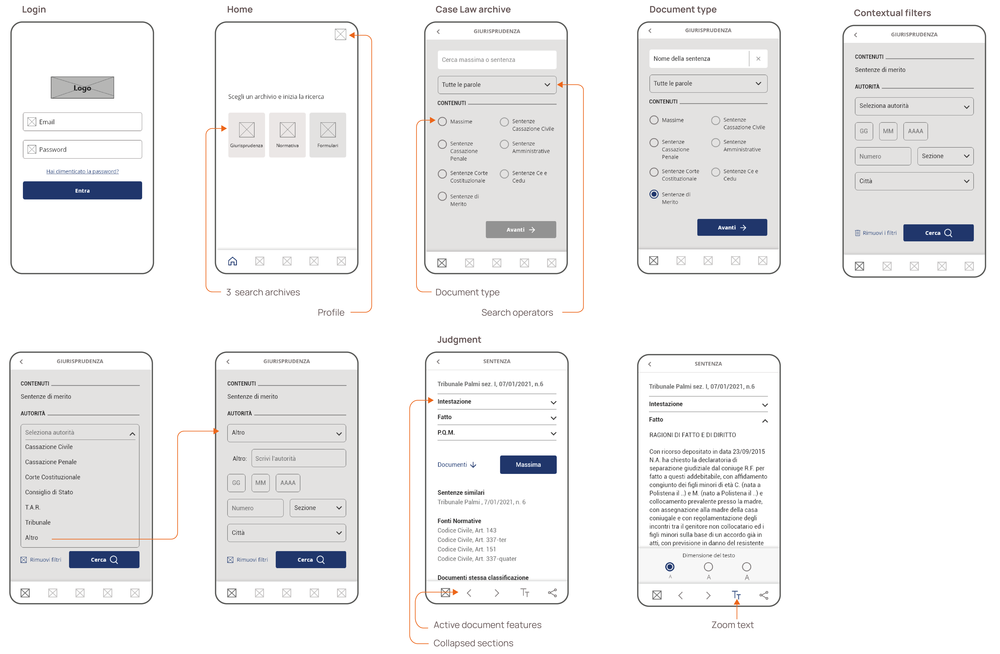
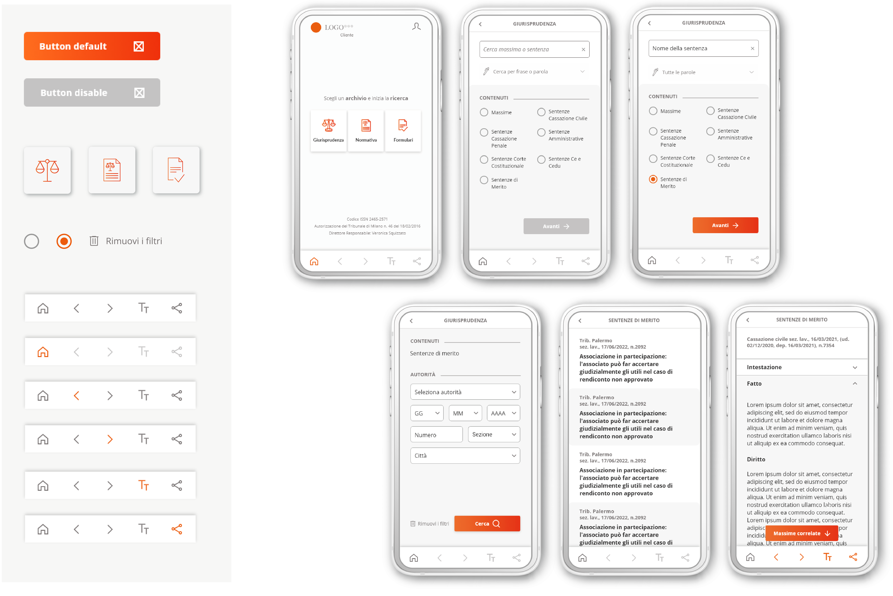

Una banca dati giuridica SaaS per avvocati, notai e studi legali abbonati. Obiettivo: Dare ai professionisti legali un accesso rapido al documento giusto quando il tempo stringe, ovunque si trovino.
Ruolo: End-to-end Product Designer (UX/UI).
Timeline: 6 settimane per il primo rilascio, 1 settimana per il secondo.

La piattaforma esistente era solo desktop, il che significava 0% di accesso da mobile per gli utenti abbonati.
Fuori dall'ufficio, cercare nella banca dati era impossibile.
Nel corridoio di un tribunale, in udienza o durante l'incontro con un cliente, l'archivio per cui pagavano non era accessibile.
Il brief iniziale era estendere il SaaS desktop al mobile.
Ma prima dovevo capire come i professionisti legali usano davvero le
banche dati fuori dall'ufficio, e ho scoperto che una replica mobile completa non avrebbe risposto al loro bisogno primario.
La domanda è cambiata da "Come portiamo il prodotto desktop su mobile?" a
"Qual è la più piccola esperienza mobile che risolve il loro Job To Be Done più importante?"
Questo ha portato a un pivot deliberato: un'app focalizzata sulla ricerca e la consultazione dei documenti legali rilevanti.
Il brief chiedeva di portare la piattaforma desktop su mobile.
Ho progettato qualcosa di più piccolo e utile, basato sugli scenari d'uso identificati:
un'app per utenti autenticati, focalizzata su un solo flusso: cerca con i filtri, leggi, condividi.
Tre archivi
Giurisprudenza per i precedenti, Legislazione per i riferimenti normativi e Formulari per i modelli annotati.
Filtri contestuali
L'app mantiene i filtri dinamici che gli avvocati già apprezzano su desktop, ma li rende contestuali.
Seleziona la Corte di Cassazione e l'app mostra solo le sezioni e le date pertinenti,
così gli utenti restringono la ricerca con meno tentativi.
Ho valutato il prodotto esistente con un'analisi euristica,
poi ho analizzato 3 competitor principali: banche dati giuridiche generaliste che funzionano come motori di ricerca testuali.
Volevo vedere come ciascuna aiuta gli utenti a definire il perimetro di ricerca, quindi ho fatto una feature inventory
su categorie di archivio, tipi di documento, ricerca semplice e avanzata, logica dei filtri e funzionalità del documento.
Rispetto ai competitor, il prodotto esistente offriva:
La ricerca non era parte del brief. Ma non volevo progettare per un pubblico c
he avrei potuto fraintendere, così ne ho condotta una mia: un questionario e interviste con 20 avvocati,
raggiunti tramite contatti e network di settore.
Alcuni erano abbonati alla piattaforma del cliente, altri usavano prodotti concorrenti.
Le risposte hanno dato forma al progetto:
Dalla ricerca sono emersi due profili, ciascuno con un modo diverso di entrare nell'app:

TQui il progetto ha cambiato direzione.
La domanda del brief era: come portiamo il prodotto desktop su mobile?
La domanda suggerita dalla ricerca era diversa:
qual è l'esperienza mobile più piccola che risolve il Job To Be Done più importante?
Una replica completa avrebbe copiato funzioni di cui nessuno ha bisogno in mobilità e nascosto l'unica che serviva.
Così ho ridefinito lo scope invece di riprodurre il prodotto e ho progettato attorno a un solo flusso:
trova il documento giusto, affina la ricerca, leggilo, condividilo.
Una volta chiaro lo scope, anche la struttura doveva essere altrettanto semplice.
La gerarchia rende facile la consultazione su tre archivi:

Su un telefono ogni controllo compete con il testo, quindi ho spostato i controlli principali in una app bar contestuale, che libera spazio di lettura e rende disponibili le azioni essenziali solo quando un documento è aperto: frecce per spostarsi tra documenti o articoli, tre dimensioni del testo che non dipendono dalle impostazioni di sistema e un pulsante per condividere il documento corrente.

L'app mantiene la tipografia e la palette colori del SaaS desktop, così il brand resta coerente tra i dispositivi e gli avvocati riconoscono il prodotto appena lo aprono.
